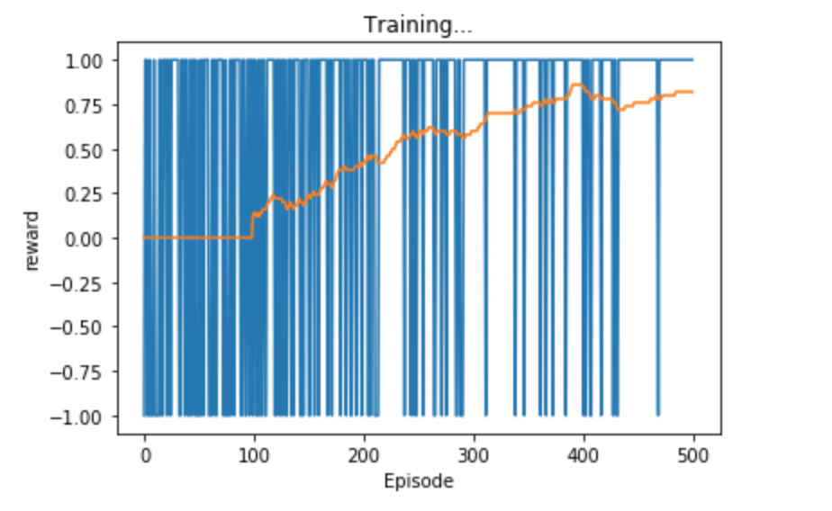
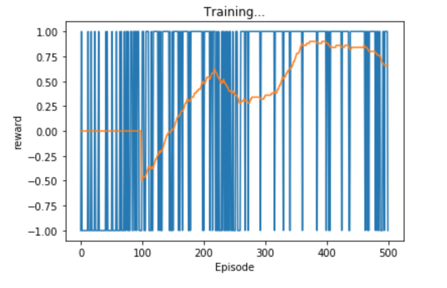

Introduction
Before deciding to work on this project, I had wanted to learn more about neural networks and reinforcement learning. I had read and watched videos about neural networks, but had never programmed one before. Similarly with reinforcement learning, I knew a little about it but had no hands on experience. Therefore, I wanted to work on something that could introduce me to both of those topics.
Enter the Kaggle connectX competition. The goal of the competition is to create an agent that plays any variant of connect4. This means it should be able to play on any board size besides the standard 6x7 board, and can play a game where you need to connect n in a row (not just 4).
This was a perfect environment to learn both topics, as connect 4 is simple to understand and implement, yet has a huge state space so is not trivially solved by a brute force tree search. This means it is a suitable for deep reinforcement learning, AKA reinforcement learning using a deep neural network.
Thus, the goal of this project was to expand my understanding of nerual networks and reinforcement learning, by training a bot to play kaggle’s connect X using deep reinforcement learning.
Implementation
Environment
The game state is handled by a kaggle environment which is similar to Open AI’s Gym toolkit. This mean that the representation of the board, handling of the turns, and calculating the end state (win, loose, tie) is all handled under the hood by kaggle.
Agent - General Overview
Once the agent is fully trained (see below) the agent will use a neural network to decide on its next move. Given a board state, the agent passes that board state into its neural network, and the network will output a move. For example in connect4, this output would be a number 0-6 indicating which column to go in.
Agent - The Nework
The heart of the agent lies in how this network can take a given state, and return a move that it thinks is best. The network does this by approximating a Q-function. While this write-up is no means an explination of what a Q-function is, or what Q-learning is, I’ll try to sum it up here: Q-learning is the name of an algorithm that, after iterating through the algorithm many times, yields a function (the “Q-function”) that will tell the agent what move to take at a particular turn. This algorithm however, it impractical to use on a game like connect 4 where the upper bound for the state space is estimated to be 1013 [1]. However, a method called “Deep Q-learning” has recently become popular as a way to approximate this Q-function using deep neural networks, as neural networks are great at approximating functions.
For the actual implementation of the network in code, I used PyTorch. The network itself consists of 2 fully connected layers and uses relu as the activation function. The code is below:
class DQN(nn.Module):
#network needs input space and output space
def __init__(self, num_states, num_actions):
super().__init__()
self.fc1 = nn.Linear(in_features=num_states, out_features=24)
self.fc2 = nn.Linear(in_features=24, out_features=32)
self.out = nn.Linear(in_features=32, out_features=num_actions)
# t is the input tensor
def forward(self, t):
# t = t.flatten(start_dim=1)
t = F.relu(self.fc1(t))
t = F.relu(self.fc2(t))
t = self.out(t)
return t
Agent - Training
The network starts out with the weights randomly initialized. It plays a game vs an agent that picks random moves and then based on the result of that game, the network gets updated.
The agent utalizes an Epsilon-greedy strategy for choosing its moves. This means that durning the earlier stages of training it will explore, meaning it picks a random move from the set of legal moves. As training goes on the agent will be more likely to exploit, meaning it will just feed the game state to the network, and select the move that the network returns. The hope is that at this point in the training, the network should be decent enough that it will give us a good move.
GPU
One of the great features of neural networks is that many of the calculations are independent of each other, meaning they can be sped up by using a GPU. PyTorch enabled use of Cuda, so if a user has an Nvidia graphics card with cuda 3.5 or above, the code will be able to utalize the GPU.
Results
Agent 1
The agent was able to beat a random opponent 90-100% of the time when testing. When I visualize the games,
it agent had found that the strategy of picking one column and then going in the same column every time
would win it the game more often than not. This makes sense because vs a random opponent, there is a good
chance the random player doesn’t choose the 1 column our agent has selected to be its 4 in a row column. It
was cool to see this “learned” behavior that emerged from training. Not surprisingly, the agent lost 100% of
the time against an agent that was using a negamax search. Below are the results for the agent, with the
player on the left being the player that goes first.
My Agent vs Random Agent: 1.0
My Agent vs Negamax Agent: 0.0
Random Agent vs. My Agent: 0.1
Negamax Agent vs. My Agent: 1.0
The image below shows the training results for the agent:
Agent 2+
After creating and tuning the original agent for a while, I had the idea that I could create a better agent
by instead of training it against the random player, this new agent would train against the previous agent I
just created. This didn’t work out as well as I had hoped, as the strategy the new agent developed did not
generalize well. The new agent was only good at beating the previous agent, and in fact, lost to the random
agent more often than the first agent! Here are the results of agent 2:
My Agent2 vs Random Agent: 0.7
My Agent2 vs Negamax Agent: 0.0
My Agent2 vs My Agent 1.0
Training results for agent 2
I then furthered this by creating a loop where a new agent would be created, trained against the previous agent, and repeat. I tried this for varying sizes of loops (the max being 10) but the results were always the same as agent 2. The final agent would still only be good at beating the previous agent, and no better against random, or even agents a few iterations removed.
Interactive
To see all of the tests and code that I used to run and test the agent, download the project and take a look at the connectx.ipynb file. If you have jupyter installed, you can also train and run the agent yourself, and play against it in the interactive part at the bottom
Final Remarks
While the success of the agent was great against a random agent, it wasn’t too surprising that it wasn’t
able to beat tree-search algorithm. A the time of writing this, none of the agents on the official Connect X
leaderboards that have the source code available are using deep learning. Most are using some modified
tree-search, such as a Monte Carlo Tree Search. While using a deep Q network might have been overkill for
this task, I still learned am immense amount throughout the process which was my overall goal in the first
place.
One of the key takeaways I got for why deep Q learning (or at least my implementation) might not be suitable
for this project is the fact that the agent can only receive a reward at the end of a game. This is an issue
because the agent only knows if it did a good or bad job once the game is over. It receives no feedback for
a particular move or strategy mid-game. This makes it difficult to figure out what aspect of its play was
worth “rewarding” since there are many move sequences until the final state. In addition, the agent might
have just gotten lucky when in fact it was playing a bad game. Imagine if you were to do a task with many
steps, and only at the end someone tells you if you did a good job or a bad job. It would be difficult to
figure out what to improve on for the next time you did the job! This is why I am not too surprised my agent
could only really figure out the strategy of gonig in the same spot many times, and no much past that.
The time I spent on this project can be divided into about 3 equal parts. The first third was simply
learning about neural networks, and Q learning. I watched and took notes on Deep Lizard's
“Machine learning and deep learning fundamentals” and their “Reinfocement learning” video playlists. The
second third was actually implementing these ideas in python/pytorch, and getting the code to just run
correctly. Then the final third was improving and tweaking the agent to get it to perform the best it could.
There are so many hyperparameters to change and test (take a look at the notebook cell with all the
hyperparameters if you are interested), that I could have spent another quarter just messing around with
those. In addition to that, I spent a while tweaking the reward system for the agent. As mentioned above, it
was difficult to figure out how to reward the agent when the only information returned is if the game was a
win, loss, or draw. Another configurable part is the design on the network itself. The network (posted
above) was a very simple network and I did not stray from that. Again, another quarter could have been spent
solely on working with adding new layers, configurating the number of neurons in each layer, messing around
with convolutional layers, changing the activation function, etc. The list goes on for the possible
configurations and changes I could have made, but that was not so much the point, as just to get a working
agent that actually used deep Q learning. Lastly, another improvement I had in mind was the training process
itself. Instead of originally training against a random opponent, I could have incorporated a “dualing
neural network” where there are 2 networks playing against each other.